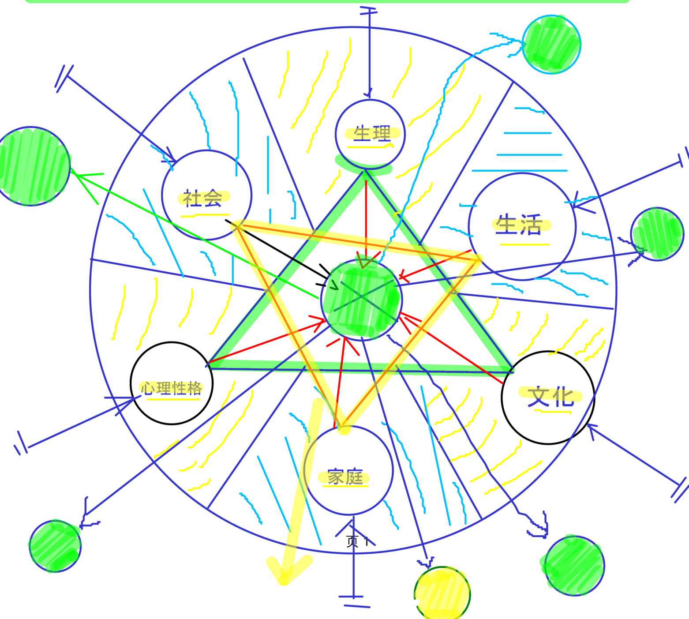
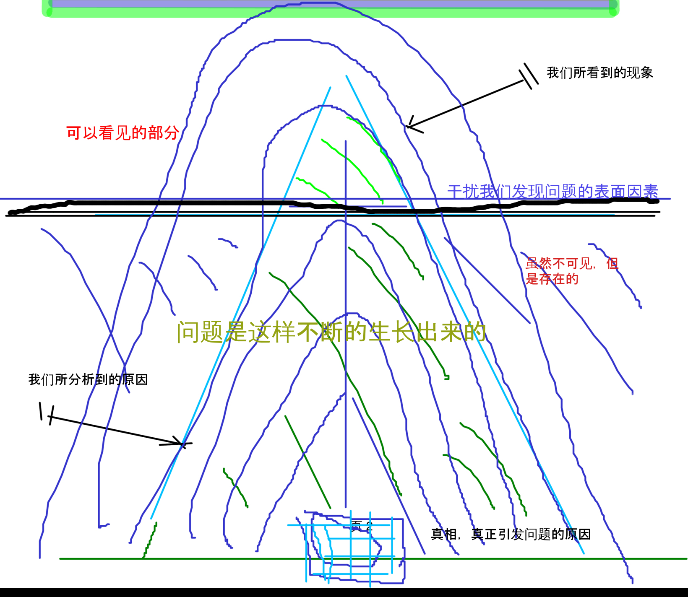

本人草绘的一张问题原因分析图
 
例如：断电时候判断为断网，然后和网络公司服务人员纠缠不清，不断的报修。从表面看似乎是因为常识缺乏，不懂，文化低造成的。事实上呢？没那么简单。这只是问题之一。确实这个问题只是导火索，事实上确实是由于其的常识上不足所引发的，但是这只是好比在病人身上划了一个小口子，里面长期以来压抑的负面情绪从这里喷发出来了。那么大量的负面情绪是从哪里积攒起来的呢？ 压力，多方面的压力。来自社会他们所接触的对象，来自他们家庭的成员的不满，来自生活上碰到的不如意，无法应付的事件。或者是来自自己无法接受自己的不足，无法接受自己无法处理好各种事情的现状，再或者是生理上疾病造成了他们身心处于一触即发的状态，还有就是文化上，接受了难以消化的不良信息，或者本身就是一个错误观念的执行者、信徒。
那么问题就不简单了。 对于以情绪为主导的人来说，问题的答案和真相并不重要，他们只是寻找一个释放情绪的突破口。什么是他们可以释放的地方呢？社会、家庭成员、生活、或者是向内，生理、心理、信仰。由于释放的口不同所反映的现象也不同，当然，他们就像是一头受伤的找不到北的野兽一样惊慌的狂奔,一路践踏。
解决问题的方法是什么？吃药抑制么，还是还有其他的方法？事实上，通过了解什么是产生这些错误的情绪的具体思维，改变它会变得更为有效。心理咨询就是帮你找出导致你产生大量不良情绪的错误思维，使你解决问题，获得幸福感。
© 2011~2014 心灵家园（退教心理咨询）